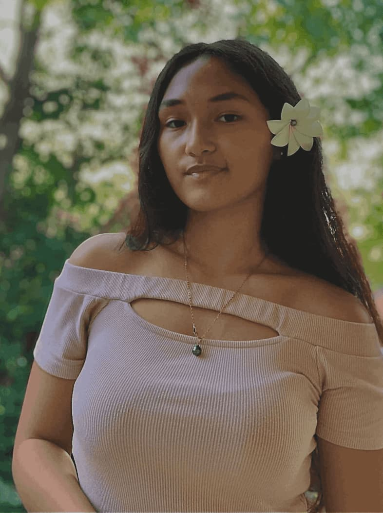
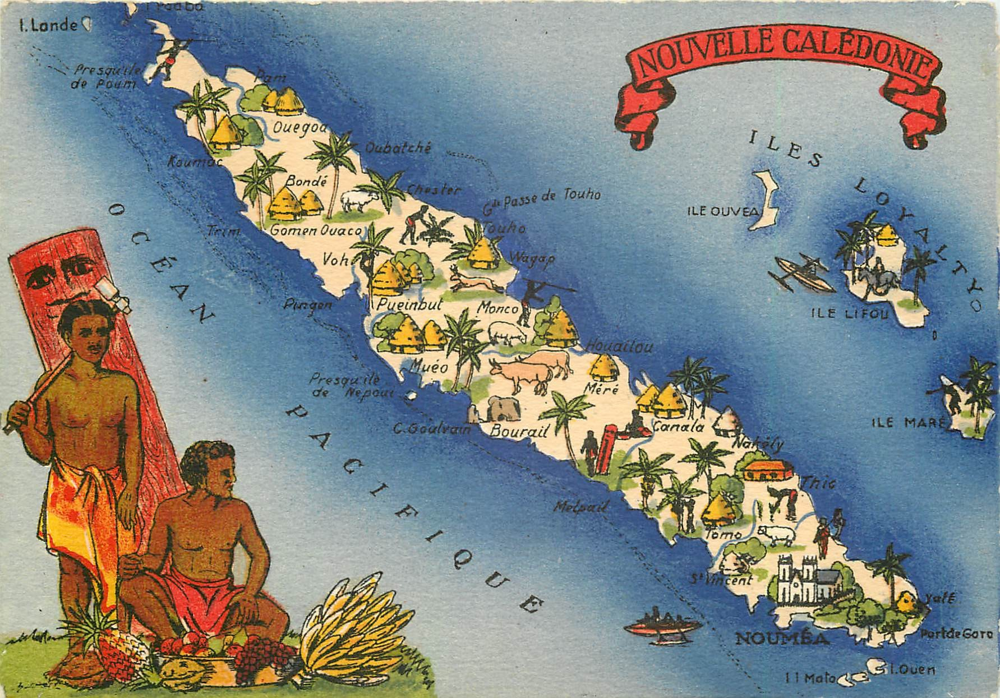

Portfolio de
Étudiante en 3ème année de BUT MMI · Future Graphiste
Originaire de Nouméa, Nouvelle-Calédonie, je porte en moi une culture plurielle forgée par les voyages, la diversité des peuples et la richesse de mon île. Graphiste en devenir, je mets cette identité unique au cœur de chaque création.

Présentation
"Faire vivre la Nouvelle-Calédonie à travers chaque création."
Je suis Cassandre Sanita, originaire de Nouméa, en Nouvelle-Calédonie. Partie en France pour mes études, j'ai grandi dans une île où diversité culturelle, biodiversité et richesses culinaires coexistent et se partagent. Ce bagage — nourri par les voyages, la découverte de cultures et de paysages multiples — est devenu mon moteur créatif. Aujourd'hui, chaque fois que c'est possible, je fais vivre la Nouvelle-Calédonie dans mes projets pour en montrer les richesses au-delà de l'image que l'on en a. Je suis aussi sportive depuis l'enfance : 11 ans de Judo dont 3 en haut niveau, de la danse, de la guitare, du tennis, du handball… La discipline et la persévérance du sport ont façonné ma façon d'aborder le design.
Origine

Depuis petite, je suis créative : je dessinais des petites bandes dessinées de Noël pour ma petite sœur, je pratiquais la guitare, plusieurs styles de danse, le sport… J'ai toujours eu besoin d'un moyen d'expression. Le multimédia réunit tout ce que j'aime — image, récit, esthétique — et me donne les outils pour transformer mes inspirations en créations qui parlent aux autres.
Après mon bac en Nouvelle-Calédonie, j'ai choisi de venir en France métropolitaine pour suivre le BUT MMI. Son approche pluridisciplinaire — design, web, vidéo, communication — correspondait exactement à ma vision : avoir les moyens techniques et créatifs pour porter des projets visuellement forts tout en intégrant une dimension culturelle et narrative qui me tient à cœur.
Ce mot résume tout ce que je suis. Créer, ce n'est pas seulement faire de belles choses — c'est transformer ce qu'on a vécu, ce qu'on a vu, ce qu'on a ressenti en quelque chose que les autres peuvent voir et ressentir à leur tour. Grandir en Nouvelle-Calédonie, voyager, pratiquer le sport à haut niveau, dessiner dès l'enfance : tout cela m'a appris que la créativité naît de la vie qu'on mène. Chaque projet est pour moi l'occasion de raconter quelque chose de vrai.
J'ai toujours eu cette envie profonde de m'améliorer et d'apprendre — que ce soit dans ma pratique sportive ou dans mon approche du design. Le sport est une grande partie de qui je suis : il m'a forgé la rigueur, le dépassement de soi et la capacité à me relever. Ma culture calédonienne m'a transmis autre chose : l'humilité, le respect et le goût du partage. Chez nous, la devise est « Terre de parole, terre de partage » — des valeurs que je porte dans chacune de mes créations.
Je porte une attention particulière à chaque élément visuel : alignement, hiérarchie typographique, harmonie des couleurs. Ce souci du détail garantit qualité et cohérence dans mes productions.
Je ne manque pas d'idées et j'aime explorer des directions inattendues. Je m'inspire de tout mon environnement — art, nature, culture — pour renouveler constamment mon approche créative.
En équipe ou en solo, face à un brief précis ou ouvert, je sais m'adapter aux contraintes et aux besoins pour livrer un rendu pertinent tout en apportant ma touche personnelle.
Je peux passer trop de temps sur des détails, ralentissant ma productivité. J'apprends à trouver l'équilibre entre excellence et efficacité en me fixant des délais fermes.
Présenter mon travail face à un groupe me demande un effort. Je travaille activement ma prise de parole lors des soutenances et des revues de projets pour progresser sur ce point.
Bac Sciences et Technologies du Management et de la Gestion, spécialité Systèmes d'Information de Gestion, obtenu en Nouvelle-Calédonie. Cette formation m'a donné une culture des outils numériques, de la gestion de l'information et de la communication, socle idéal pour intégrer le BUT MMI.
Première année de formation en Métiers du Multimédia et de l'Internet à l'IUT Di Corsica de Corte. Découverte du design graphique, du développement web, de la vidéo et de la communication digitale dans un cadre insulaire riche en culture.
Deuxième année de formation en Métiers du Multimédia et de l'Internet, désormais validée. Design graphique, développement web, vidéo, motion design et communication digitale. Chaque projet est l'occasion de mettre ma sensibilité calédonienne au service de créations visuelles fortes.
Actuellement en troisième année de formation en Métiers du Multimédia et de l'Internet, au même IUT. Je poursuis le développement de mes compétences en design graphique, développement web, vidéo, motion design et communication digitale.
Grandir en Nouvelle-Calédonie, dans une culture fondée sur le partage et le respect — là où la devise est « Terre de parole, terre de partage » — m'a donné un regard singulier sur le monde et une vraie humilité. Mon bac STMG spécialité SIG m'a initiée à la gestion de l'information et aux outils numériques — une base solide pour le BUT MMI. Mais c'est surtout le sport qui m'a construite : 11 ans de Judo dont 3 à haut niveau m'ont appris la rigueur, le dépassement de soi et la persévérance. Aujourd'hui je pratique aussi le volley-ball, et cette envie constante de progresser, de toujours apprendre et de m'améliorer, je la retrouve dans chacun de mes projets de design.
Je souhaite devenir graphiste spécialisée en identité visuelle et direction artistique, tout en continuant à faire rayonner la Nouvelle-Calédonie à travers mes créations. Voici comment j'envisage mon parcours :
Intégrer une agence, un studio ou une entreprise en alternance afin de développer mes compétences en design graphique, identité visuelle et communication visuelle, tout en les confrontant à des projets professionnels. Continuer à construire un portfolio qui reflète mon univers et met à l’honneur la culture et les richesses de la Nouvelle-Calédonie.
Après une poursuite d'études en école de graphisme ou en licence pro, obtenir un poste de graphiste confirmée. Approfondir le branding, la typographie et le motion design. Travailler idéalement sur des projets à dimension culturelle — notamment calédoniens — pour valoriser les identités visuelles singulières.
Créer mon propre studio de design ou occuper un poste de directrice artistique au sein d'une agence reconnue. À terme, développer des projets en lien avec la Nouvelle-Calédonie — contribuer à mettre en lumière ses richesses culturelles, humaines et naturelles à travers le design.
Questionner les conventions et proposer des solutions visuelles inattendues.
Intégrer les enjeux environnementaux et éthiques dans chaque choix créatif.
Concevoir des designs lisibles, accessibles et émotionnellement engageants.
Assurer une harmonie visuelle et narrative à travers tous les supports.
IUT — France
2024 — 2027
Après avoir validé ma deuxième année, je suis actuellement en troisième année de BUT MMI dans le même IUT. Formation en design graphique, web, vidéo, motion design et communication digitale.
Club La Salle — Bettancourt-la-Ferrée, secteur Saint-Dizier
27 avril — 19 juin 2026
Lors de mon stage de deuxième année, j'ai mis ces compétences en pratique à travers différents projets : création d'une charte graphique, affiches et flyers, contenus pour les réseaux sociaux, photographie, vidéo et refonte d'un site internet. Cette expérience m'a appris à adapter une communication à l'identité, aux objectifs et au public d'une structure.
DRH GIE CEDA — McDonald's Nouméa
Stage — Ressources humaines · Nouvelle-Calédonie
Stage en ressources humaines hors filière MMI, mais fondateur dans mon parcours : j'ai interviewé tous les services de l'entreprise pour découvrir les métiers. En observant le service marketing concevoir des panneaux publicitaires, j'ai su que c'était la voie qui me correspondait — et c'est ce qui m'a orientée vers le design graphique.
Advertiz3D — Graphisme & communication
Création de supports de communication web et print, conception graphique et adaptation de visuels selon les besoins du client. Cette expérience est notamment illustrée par mon projet d'affiche Gamescom présenté dans mon portfolio.
Bénévolat — Club de Judo JCMD
Participation à l'organisation d'événements sportifs, aide à la communication, gestion logistique, tenue de stand et coordination lors des manifestations du club.
Adobe Illustrator · Photoshop · InDesign · Figma · HTML/CSS · Photographie
Mon travail
Projets réalisés dans le cadre du BUT MMI et à titre personnel, classés par compétence.
Ce que je sais faire
« Apprendre est un mouvement, jamais un point d'arrivée. »
Ces jauges illustrent ma maîtrise actuelle de chaque outil. Vous remarquerez qu'aucune n'atteint les 100% : c'est une volonté de souligner que dans nos métiers créatifs, l'évolution est permanente. Chaque projet est une opportunité de découvrir une nouvelle technique ou d'affiner mon regard pour tendre vers l'excellence.
Retouche photo, montages, création de visuels pour le web et le print.
Logos, illustrations vectorielles, chartes graphiques, affiches.
Mise en page de magazines, brochures et supports print.
Motion design, animations graphiques, génériques vidéo.
Montage vidéo, assemblage, rythme et habillage.
Maquettage UX/UI, prototypage interactif, design systems.
Création de supports de communication et contenus digitaux.
Montage vidéo et contenus pour les réseaux sociaux.
Édition et intégration de projets web en HTML/CSS.
Intégration web, responsive design, animations CSS.
Gestion et hébergement de projets web.
Création de logos, mise en page, direction artistique, affiches, interfaces graphiques.
Conception d'interfaces web et mobiles centrées utilisateur, wireframes et prototypes interactifs.
Planification, respect des délais, communication avec les parties prenantes, prise de décision.
Veille créative régulière, connaissance des tendances design, analyse critique de productions visuelles.
Capacité à défendre mes créations, expliquer mes choix graphiques à des clients, enseignants ou pairs lors de soutenances et revues de projet.
Expérience du travail en équipe sur des projets créatifs, écoute active, intégration de feedbacks et coordination d'un groupe autour d'un objectif visuel commun.
Recherches inspirationnelles et fonctionnelles, création de moodboards, analyse de l'existant pour enrichir le processus créatif.
Travaillons ensemble
Une question, une proposition, un projet ? N'hésitez pas !
Alternance 2026 – 2027